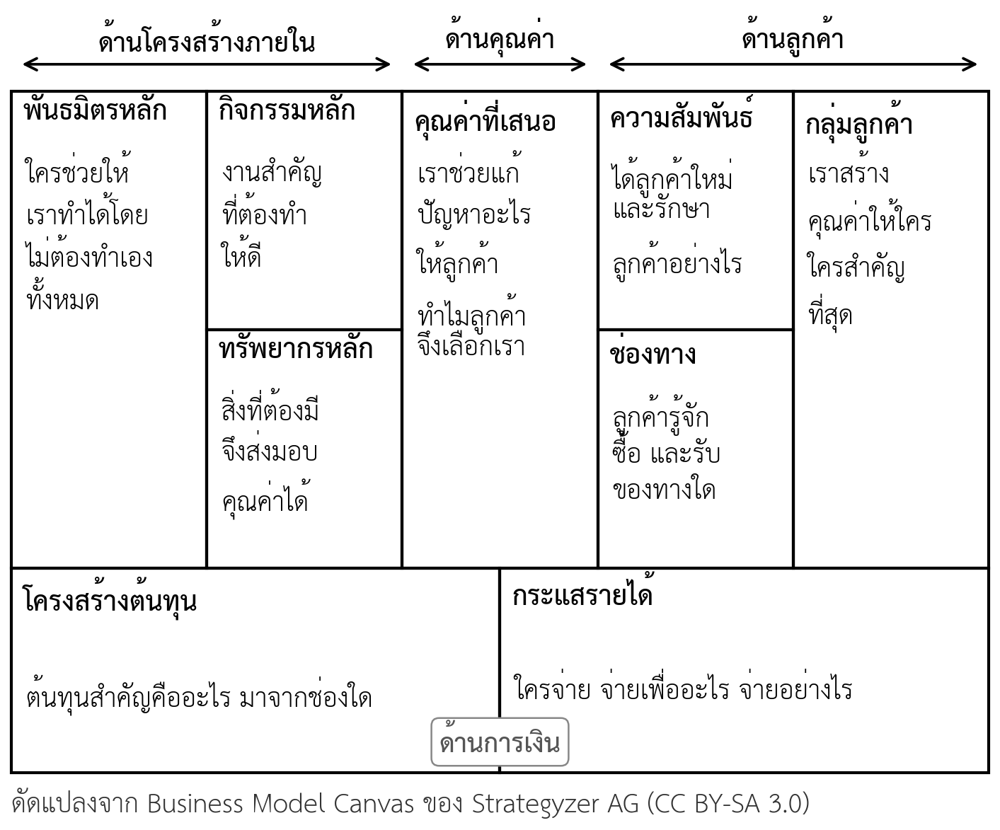
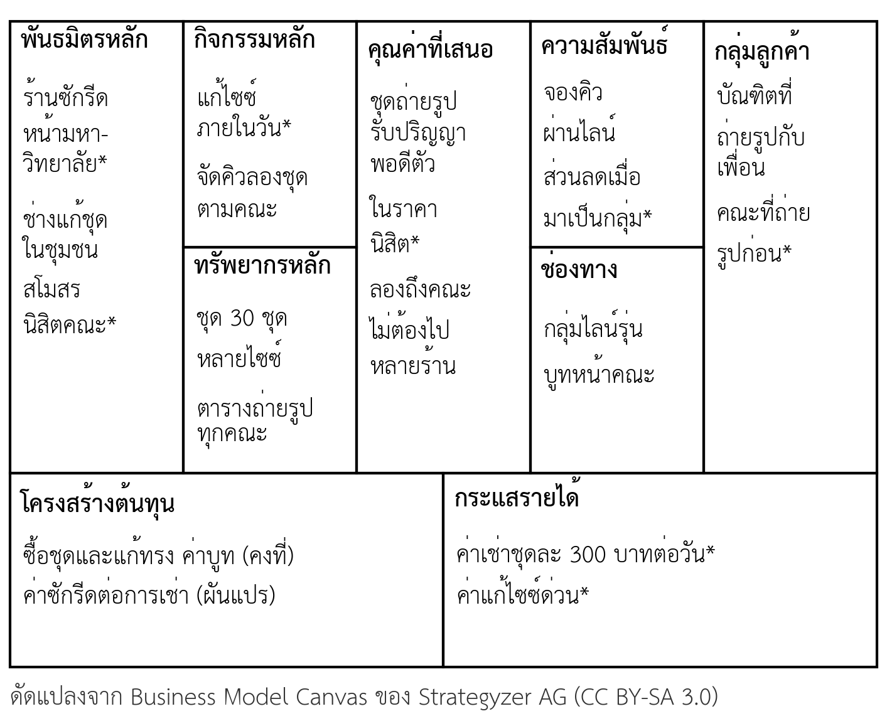

- อธิบายความหมายของโมเดลธุรกิจ และความแตกต่างระหว่างโมเดลธุรกิจ กลยุทธ์ และแผนธุรกิจได้
- ระบุองค์ประกอบ 9 ช่องของ Business Model Canvas และจำแนกรายการของธุรกิจลงช่องที่ถูกต้องได้
- ใช้ Lean Canvas ของกลุ่มจัดทำ Business Model Canvas โดยเติมช่องที่ Lean Canvas ไม่มีได้
- ยกตัวอย่างรูปแบบโมเดลธุรกิจสมัยใหม่ และอธิบายวิธีสร้างรายได้ของแต่ละรูปแบบได้
- ใช้คำถามตรวจความเชื่อมโยงระบุรายการที่ไม่เชื่อมกับช่องอื่นใน Canvas ของกลุ่มได้
- เขียน Canvas ปัจจุบันและ Canvas เป้าหมายแยกกัน และติดป้ายข้อเท็จจริงหรือข้อสมมติทุกรายการได้
- จัดทำงานด่าน 2 Lean Canvas และ Business Model Canvas ของกลุ่มได้ (ใบงานที่ 2)
ความนำ
ในบทที่ 3 นิสิตเขียน Lean Canvas ของกลุ่ม ซึ่งเน้นปัญหา ลูกค้า และข้อสมมติที่ต้องทดสอบ Lean Canvas ตอบได้ดีว่าธุรกิจจะแก้ปัญหาอะไรให้ใคร แต่ยังตอบไม่ครบว่าธุรกิจต้องทำงานอะไร ต้องมีทรัพยากรอะไร ต้องร่วมมือกับใคร และจะดูแลลูกค้าอย่างไร คำถามเหล่านี้สำคัญมากขึ้นเมื่อทีมเริ่มเห็นว่าไอเดียมีลูกค้าจริง และต้องคิดว่าจะส่งมอบคุณค่าให้ได้สม่ำเสมออย่างไร
บทนี้แนะนำ Business Model Canvas ซึ่งเป็นแม่แบบโมเดลธุรกิจหน้าเดียวที่ใช้กันแพร่หลายที่สุด เริ่มจากความหมายของโมเดลธุรกิจ ต่อด้วยองค์ประกอบ 9 ช่องและประเภทย่อยของแต่ละช่อง วิธีแปลง Lean Canvas เป็น Business Model Canvas และรูปแบบโมเดลธุรกิจสมัยใหม่ที่ใช้เป็นแรงบันดาลใจได้ จากนั้นเป็นส่วนที่สำคัญที่สุดของบท คือการตรวจความเชื่อมโยงระหว่างช่อง การแยก Canvas ปัจจุบันออกจาก Canvas เป้าหมาย และการติดป้ายข้อเท็จจริงกับข้อสมมติ
บทนี้ใช้เวลาเรียน 2 สัปดาห์ สัปดาห์แรกเน้นความเข้าใจองค์ประกอบ สัปดาห์ที่สองเป็น Workshop ทำ Canvas ของกลุ่ม ผลงานของบทคืองานด่าน 2 ที่นำเสนอ Lean Canvas และ Business Model Canvas คู่กันในสัปดาห์ที่ 7
4.1 ความหมายของโมเดลธุรกิจ
โมเดลธุรกิจ (Business model) คือหลักการที่อธิบายว่าองค์กรสร้างคุณค่า ส่งมอบคุณค่า และได้รับคุณค่ากลับมาอย่างไร (Osterwalder & Pigneur, 2010) คำว่า "ได้รับคุณค่ากลับมา" หมายถึงรายได้และผลตอบแทนที่ทำให้ธุรกิจอยู่รอด นักวิชาการอื่นให้ความหมายในทิศทางเดียวกัน ตามตารางที่ 4.1
ตารางที่ 4.1 ความหมายของโมเดลธุรกิจจากนักวิชาการ
| นักวิชาการ | ความหมายโดยสรุป | จุดเน้น |
|---|---|---|
| Johnson และคณะ (2008) | องค์ประกอบ 4 ส่วนที่เชื่อมกัน ได้แก่ คุณค่าที่เสนอต่อลูกค้า สูตรกำไร ทรัพยากรหลัก และกระบวนการหลัก | การทำงานร่วมกันขององค์ประกอบ |
| Osterwalder และ Pigneur (2010) | หลักการที่องค์กรสร้าง ส่งมอบ และได้รับคุณค่ากลับมา | ภาพรวมที่เขียนได้ในหน้าเดียว |
| Teece (2010) | ตรรกะและหลักฐานที่แสดงว่าธุรกิจสร้างและส่งมอบคุณค่าให้ลูกค้า และเปลี่ยนการจ่ายเงินของลูกค้าเป็นกำไรได้อย่างไร | การเปลี่ยนคุณค่าเป็นกำไร |
| Zott และคณะ (2011) | ระบบของกิจกรรมที่เชื่อมกันข้ามขอบเขตขององค์กร | ธุรกิจทำงานร่วมกับคู่ค้าและลูกค้า |
นิยามทั้งหมดมีจุดร่วมคือมองธุรกิจเป็น "ระบบ" ที่ทุกส่วนทำงานร่วมกัน ไม่ใช่สินค้าชิ้นเดียว ร้านกาแฟสองร้านที่ขายกาแฟรสชาติเท่ากันอาจมีโมเดลธุรกิจต่างกันสิ้นเชิง ร้านหนึ่งขายหน้าร้านให้นิสิต อีกร้านขายกาแฟสมาชิกรายเดือนส่งสำนักงาน ทั้งสองร้านต่างกันที่ลูกค้า ช่องทาง รูปแบบรายได้ และทรัพยากรที่ต้องใช้
4.1.1 โมเดลธุรกิจ กลยุทธ์ และแผนธุรกิจ
คำสามคำนี้มักถูกใช้ปนกัน โมเดลธุรกิจตอบว่าธุรกิจ "ทำงานอย่างไร" กลยุทธ์ตอบว่าธุรกิจจะ "แข่งขันอย่างไร" ให้ชนะคู่แข่งในตลาด ส่วนแผนธุรกิจคือเอกสารที่ขยายโมเดลธุรกิจและกลยุทธ์ให้มีรายละเอียด ตัวเลข และลำดับเวลาที่ผู้อื่นใช้ตัดสินใจได้ ตัวอย่างเช่น ร้านกาแฟสมาชิกรายเดือนมีโมเดลธุรกิจคือรายได้ต่อเนื่องจากสำนักงาน กลยุทธ์คือเน้นสำนักงานขนาดเล็กที่ร้านใหญ่ไม่สนใจ และแผนธุรกิจบอกว่าจะหาสำนักงาน 20 แห่งภายใน 6 เดือนด้วยงบประมาณเท่าใด
4.2 Business Model Canvas 9 องค์ประกอบ
Business Model Canvas คือแม่แบบหน้าเดียวที่แบ่งโมเดลธุรกิจเป็น 9 องค์ประกอบ (Osterwalder & Pigneur, 2010) เผยแพร่ภายใต้สัญญาอนุญาต CC BY-SA 3.0 จึงใช้และดัดแปลงได้เมื่อระบุที่มา 9 องค์ประกอบจัดเป็น 4 ด้าน ตามภาพที่ 4.1 ด้านขวาเป็นเรื่องลูกค้า ตรงกลางเป็นคุณค่า ด้านซ้ายเป็นโครงสร้างภายในที่ทำให้ส่งมอบคุณค่าได้ และแถวล่างเป็นเรื่องการเงิน

ตารางที่ 4.2 สรุปองค์ประกอบทั้ง 9 พร้อมคำถามหลักและประเภทย่อยที่ใช้ช่วยคิด ประเภทย่อยไม่ใช่รายการที่ต้องเลือกให้ครบ แต่เป็นรายการทางเลือกที่ช่วยให้ทีมเห็นว่ายังมีวิธีอื่นที่ยังไม่ได้คิด
ตารางที่ 4.2 องค์ประกอบ 9 ช่องของ Business Model Canvas คำถามหลัก และประเภทย่อย
| ด้าน | องค์ประกอบ | คำถามหลัก | ประเภทย่อยที่ใช้ช่วยคิด |
|---|---|---|---|
| ลูกค้า | กลุ่มลูกค้า (Customer segments) | เราสร้างคุณค่าให้ใคร | ตลาดมวลชน ตลาดเฉพาะกลุ่ม หลายกลุ่มที่ต่างกันเล็กน้อย หลายกลุ่มที่ไม่เกี่ยวกัน หลายฝั่งที่พึ่งพากัน |
| ลูกค้า | ช่องทาง (Channels) | ลูกค้ารู้จัก ประเมิน ซื้อ รับสินค้า และได้รับบริการหลังการขายทางใด | ช่องทางของตนเองหรือของพันธมิตร ช่องทางตรงหรือผ่านคนกลาง |
| ลูกค้า | ความสัมพันธ์กับลูกค้า (Customer relationships) | ได้ลูกค้าใหม่ รักษาลูกค้าเดิม และเพิ่มยอดขายต่อรายอย่างไร | ดูแลโดยพนักงาน ดูแลแบบเฉพาะราย บริการตนเอง บริการอัตโนมัติ ชุมชนผู้ใช้ การร่วมสร้างกับลูกค้า |
| คุณค่า | คุณค่าที่เสนอ (Value propositions) | เราแก้ปัญหาหรือตอบความต้องการอะไรของลูกค้า | ความใหม่ ประสิทธิภาพ ปรับตามลูกค้า ทำให้งานสำเร็จ การออกแบบ แบรนด์ ราคา ลดต้นทุน ลดความเสี่ยง การเข้าถึง ความสะดวก |
| ภายใน | กิจกรรมหลัก (Key activities) | งานสำคัญที่สุดที่ต้องทำให้ดีคืออะไร | การผลิต การแก้ปัญหาให้ลูกค้า การดูแลแพลตฟอร์มหรือเครือข่าย |
| ภายใน | ทรัพยากรหลัก (Key resources) | ต้องมีอะไรจึงจะส่งมอบคุณค่าได้ | ทรัพยากรทางกายภาพ ทรัพย์สินทางปัญญา บุคลากร เงินทุน |
| ภายใน | พันธมิตรหลัก (Key partnerships) | ใครช่วยให้เราทำได้โดยไม่ต้องทำเองทั้งหมด | พันธมิตรที่ไม่ใช่คู่แข่ง พันธมิตรกับคู่แข่ง กิจการร่วมค้า ผู้ขายวัตถุดิบประจำ |
| การเงิน | กระแสรายได้ (Revenue streams) | ลูกค้าจ่ายเพื่ออะไร จ่ายอย่างไร | ขายขาด ค่าใช้งาน ค่าสมาชิก ค่าเช่า ค่าสิทธิ ค่านายหน้า ค่าโฆษณา |
| การเงิน | โครงสร้างต้นทุน (Cost structure) | ต้นทุนสำคัญคืออะไร มาจากช่องใด | เน้นต้นทุนต่ำหรือเน้นคุณค่า ต้นทุนคงที่และต้นทุนผันแปร |
4.2.1 ด้านลูกค้าและคุณค่า
ด้านลูกค้าเริ่มจากกลุ่มลูกค้าเสมอ เพราะคุณค่า ช่องทาง และความสัมพันธ์ขึ้นกับว่าลูกค้าคือใคร ทีมควรแยกลูกค้าเป็นคนละกลุ่มเมื่อกลุ่มเหล่านั้นต้องการคุณค่าต่างกัน เข้าถึงผ่านช่องทางต่างกัน ต้องการความสัมพันธ์ต่างกัน หรือยอมจ่ายต่างกัน ถ้าไม่มีความต่างเหล่านี้ การแยกกลุ่มไม่ได้ช่วยอะไร
ช่องคุณค่าที่เสนอควรตอบว่าลูกค้าได้อะไร ไม่ใช่สินค้ามีคุณสมบัติอะไร ประเภทย่อยในตารางที่ 4.2 ช่วยให้ทีมเห็นคุณค่าในหลายมุม เช่น ร้านอาหารใกล้หอพักอาจไม่ได้เสนอคุณค่าเรื่องรสชาติอย่างเดียว แต่เสนอความสะดวกเพราะเปิดดึก และการเข้าถึงเพราะมีเมนูราคาที่นิสิตจ่ายได้ทุกวัน ช่องความสัมพันธ์ต่างจากช่องทางตรงที่ช่องทางคือเส้นทางที่ลูกค้าพบธุรกิจ ส่วนความสัมพันธ์คือวิธีที่ธุรกิจดูแลลูกค้าให้กลับมา ความสัมพันธ์ที่ใช้คนดูแลมากสร้างความผูกพันได้ดีแต่มีต้นทุนสูง ธุรกิจจึงต้องเลือกให้เหมาะกับรายได้ต่อลูกค้า
4.2.2 ด้านโครงสร้างภายในและการเงิน
ด้านซ้ายของ Canvas ตอบว่าธุรกิจต้องทำอะไร มีอะไร และร่วมมือกับใครเพื่อส่งมอบคุณค่าทางด้านขวา หลักสำคัญคือทุกรายการทางซ้ายต้องตอบได้ว่าค้ำคุณค่าข้อใด ถ้าตอบไม่ได้ รายการนั้นอาจไม่ใช่ "หลัก" จริง ส่วนพันธมิตรหลักมีเหตุผล 3 ข้อ คือ ลดต้นทุนจากการไม่ต้องทำเองทุกอย่าง ลดความเสี่ยง และได้ทรัพยากรที่ทีมไม่มี
ด้านการเงินแสดงผลรวมของช่องอื่นทั้งหมด กระแสรายได้มาจากด้านลูกค้า โครงสร้างต้นทุนมาจากด้านโครงสร้างภายใน ถ้าต้นทุนรวมสูงกว่ารายได้ที่คาด ทีมต้องย้อนกลับไปปรับช่องอื่น ไม่ใช่ปรับตัวเลขรายได้ให้สูงขึ้นโดยไม่มีหลักฐาน ตารางที่ 4.3 แสดงรูปแบบรายได้ 7 แบบพร้อมตัวอย่างที่นิสิตพบได้
ตารางที่ 4.3 รูปแบบกระแสรายได้และตัวอย่าง
| รูปแบบรายได้ | ลักษณะ | ตัวอย่างที่นิสิตพบได้ |
|---|---|---|
| ขายขาด (Asset sale) | ขายกรรมสิทธิ์ของสินค้าให้ลูกค้า | ร้านขายเสื้อผ้า ร้านขายอุปกรณ์การเรียน |
| ค่าใช้งาน (Usage fee) | คิดเงินตามปริมาณที่ใช้ | เครื่องซักผ้าหยอดเหรียญ ร้านถ่ายเอกสาร |
| ค่าสมาชิก (Subscription) | เก็บเงินเป็นงวดเพื่อสิทธิใช้บริการต่อเนื่อง | ฟิตเนสรายเดือน บริการดูภาพยนตร์ออนไลน์ |
| ค่าเช่า (Lending, renting) | ให้สิทธิใช้ชั่วคราวในช่วงเวลาหนึ่ง | เช่าชุดรับปริญญา เช่ากล้องถ่ายรูป |
| ค่าสิทธิ (Licensing) | ให้ผู้อื่นใช้ทรัพย์สินทางปัญญา | ค่าแฟรนไชส์ ค่าลิขสิทธิ์ลายการ์ตูนบนสินค้า |
| ค่านายหน้า (Brokerage) | เก็บส่วนแบ่งจากการเป็นตัวกลาง | แพลตฟอร์มขายของออนไลน์ นายหน้าหาห้องพัก |
| ค่าโฆษณา (Advertising) | ขายพื้นที่สื่อให้ผู้ลงโฆษณา | เพจรีวิวร้านอาหาร ช่องวิดีโอออนไลน์ |
รายได้ยังแบ่งได้เป็น รายได้ต่อครั้ง (Transaction revenue) ที่ได้เมื่อลูกค้าซื้อแต่ละครั้ง และ รายได้ต่อเนื่อง (Recurring revenue) ที่ได้เป็นงวดจากลูกค้ารายเดิม รายได้ต่อเนื่องคาดการณ์ได้ง่ายกว่า ผู้ลงทุนจึงมักให้ความสนใจ ซึ่งจะกล่าวถึงอีกครั้งในบทที่ 7
4.3 จาก Lean Canvas สู่ Business Model Canvas
กลุ่มที่ทำ Lean Canvas มาแล้วไม่ต้องเริ่ม Business Model Canvas จากศูนย์ เพราะ 5 ช่องย้ายข้ามมาได้เกือบทันที อีก 4 ช่องเป็นช่องใหม่ที่ทีมต้องเติม ตารางที่ 4.4 แสดงวิธีแปลงแต่ละช่อง
ตารางที่ 4.4 การแปลง Lean Canvas เป็น Business Model Canvas
| ช่องใน Lean Canvas | ไปอยู่ช่องใดใน Business Model Canvas | สิ่งที่ต้องทำเพิ่ม |
|---|---|---|
| กลุ่มลูกค้าและผู้ใช้กลุ่มแรก | กลุ่มลูกค้า | ระบุผู้ใช้กลุ่มแรกเป็นกลุ่มที่สำคัญที่สุด |
| ปัญหาและคุณค่าเฉพาะตัว | คุณค่าที่เสนอ | เขียนเป็นคุณค่าที่ลูกค้าได้รับ ไม่ใช่ตัวปัญหา |
| ทางแก้ | คุณค่าที่เสนอ และกิจกรรมหลัก | แยกสิ่งที่ลูกค้าได้รับออกจากงานที่ทีมต้องทำ |
| ช่องทาง | ช่องทาง | เติมให้ครบระยะ รู้จัก ซื้อ รับสินค้า และหลังการขาย |
| กระแสรายได้ | กระแสรายได้ | ระบุรูปแบบรายได้ตามตารางที่ 4.3 |
| โครงสร้างต้นทุน | โครงสร้างต้นทุน | แยกต้นทุนคงที่และต้นทุนผันแปร |
| ตัวชี้วัดหลัก | ไม่มีช่องโดยตรง | เก็บไว้ในเอกสารแนบเพื่อใช้ติดตามผล |
| ความได้เปรียบที่ลอกเลียนยาก | ทรัพยากรหลัก หรือพันธมิตรหลัก | ระบุว่าความได้เปรียบนั้นเป็นทรัพยากรหรือความร่วมมือแบบใด |
| (ไม่มีใน Lean Canvas) | พันธมิตรหลัก กิจกรรมหลัก ทรัพยากรหลัก ความสัมพันธ์กับลูกค้า | เติมใหม่โดยถามว่าค้ำคุณค่าข้อใด |
ภาพที่ 4.2 แสดงผลของการแปลง Lean Canvas ร้านเช่าชุดรับปริญญาในภาพที่ 3.2 เป็น Business Model Canvas รายการที่มีเครื่องหมายดอกจันคือรายการที่ยังเป็นข้อสมมติ ช่องใหม่ที่เพิ่มเข้ามาทำให้ทีมเห็นสิ่งที่ Lean Canvas ไม่ได้บอก เช่น ทีมต้องพึ่งร้านซักรีดหน้ามหาวิทยาลัยให้ซักชุดคืนได้ทันภายใน 1 วัน และต้องพึ่งช่างแก้ชุดในชุมชนให้แก้ไซซ์ได้ภายในวันเดียว ถ้าพันธมิตรทั้งสองทำไม่ได้ คุณค่า "ชุดพอดีตัว" และ "ลองถึงคณะ" จะส่งมอบไม่ได้ ข้อสมมติเรื่องพันธมิตรจึงเป็นข้อที่ต้องตรวจสอบก่อนเปิดบริการจริง

4.4 รูปแบบโมเดลธุรกิจสมัยใหม่
ผู้ประกอบการไม่จำเป็นต้องคิดโมเดลธุรกิจใหม่ทั้งหมด เพราะมีรูปแบบที่ธุรกิจจำนวนมากใช้แล้วได้ผล Osterwalder และ Pigneur (2010) เรียกรูปแบบเหล่านี้ว่า รูปแบบโมเดลธุรกิจ (Business model patterns) ตารางที่ 4.5 สรุปรูปแบบที่พบบ่อยในธุรกิจปัจจุบัน พร้อมช่องที่เป็นหัวใจของแต่ละรูปแบบ
ตารางที่ 4.5 รูปแบบโมเดลธุรกิจสมัยใหม่
| รูปแบบ | หลักการ | ช่องที่เป็นหัวใจ | ตัวอย่าง |
|---|---|---|---|
| แพลตฟอร์มหลายฝั่ง (Multi-sided platform) | เชื่อมลูกค้าสองกลุ่มขึ้นไปที่ต้องการกันและกัน คุณค่าเพิ่มเมื่อแต่ละฝั่งมีมากขึ้น | กลุ่มลูกค้าหลายฝั่ง กิจกรรมดูแลแพลตฟอร์ม | แอปพลิเคชันสั่งอาหารที่เชื่อมร้านอาหาร ผู้สั่ง และผู้ส่ง |
| สมาชิก (Subscription) | ลูกค้าจ่ายเป็นงวดเพื่อใช้บริการต่อเนื่อง | กระแสรายได้ ความสัมพันธ์กับลูกค้า | กล่องผลไม้ส่งถึงบ้านทุกสัปดาห์ |
| ฟรีเมียม (Freemium) | ให้ใช้บริการพื้นฐานฟรี เก็บเงินจากผู้ใช้ส่วนน้อยที่ต้องการบริการเพิ่ม | กลุ่มลูกค้าที่ใช้ฟรีและที่จ่าย โครงสร้างต้นทุน | แอปพลิเคชันจดบันทึกที่เก็บเงินเมื่อต้องการพื้นที่เพิ่ม |
| การแยกส่วนธุรกิจ (Unbundling) | แยกธุรกิจการดูแลลูกค้า การพัฒนาสินค้า และโครงสร้างพื้นฐาน ออกจากกัน เพราะแต่ละส่วนบริหารต่างกัน | กิจกรรมหลัก พันธมิตรหลัก | ร้านค้าออนไลน์ที่จ้างคลังสินค้าภายนอกจัดส่งให้ |
| สินค้าเฉพาะกลุ่มจำนวนมาก (Long tail) | ขายสินค้าเฉพาะกลุ่มจำนวนมากรายการ แต่ละรายการขายน้อยแต่รวมกันแล้วมาก | ทรัพยากรหลัก ช่องทาง | ร้านหนังสือออนไลน์ที่มีหนังสือเฉพาะทางจำนวนมาก |
| แบบเปิด (Open business model) | ร่วมสร้างคุณค่ากับคนภายนอก รับความรู้เข้ามาหรือนำสิ่งที่ไม่ใช้ออกไปสร้างรายได้ | พันธมิตรหลัก ทรัพยากรหลัก | บริษัทที่ให้ผู้พัฒนาภายนอกสร้างบริการเสริมบนระบบของตน |
รูปแบบเหล่านี้ใช้เป็นแรงบันดาลใจได้ แต่ต้องปรับให้เข้ากับลูกค้าและพิสูจน์ใหม่ทุกครั้ง แพลตฟอร์มหลายฝั่งเป็นรูปแบบที่นิสิตเลือกบ่อยที่สุด และเป็นรูปแบบที่เริ่มยากที่สุด เพราะต้องหาผู้ใช้ทุกฝั่งพร้อมกัน ดังที่อธิบายในหัวข้อ 2.3 ส่วนฟรีเมียมต้องคำนวณให้ได้ว่ารายได้จากผู้ใช้ส่วนน้อยที่จ่ายเงินครอบคลุมต้นทุนของผู้ใช้ฟรีทั้งหมดหรือไม่ ถ้าทีมเลือกรูปแบบใด ควรระบุในงานด่าน 2 ว่าข้อสมมติสำคัญของรูปแบบนั้นคืออะไร
4.5 ความเชื่อมโยงระหว่างองค์ประกอบ
ความผิดพลาดที่พบบ่อยที่สุดในการใช้ Business Model Canvas คือมองเป็นแบบฟอร์มที่ต้องกรอกให้ครบทุกช่อง Canvas ที่กรอกครบแต่แต่ละช่องไม่เกี่ยวข้องกัน บอกอะไรเกี่ยวกับธุรกิจได้น้อยมาก คุณค่าของ Canvas อยู่ที่ความเชื่อมโยง คุณค่าแต่ละข้อต้องตอบกลุ่มลูกค้าที่ระบุ ส่งผ่านช่องทางที่ระบุ สร้างรายได้ที่ระบุ และมีกิจกรรม ทรัพยากร และพันธมิตรที่ค้ำไว้ ต้นทุนทุกรายการต้องมาจากกิจกรรม ทรัพยากร หรือพันธมิตรที่มีใน Canvas เกณฑ์นี้มีน้ำหนักมากที่สุดในรูบริกที่ 2 ที่ใช้ประเมินงานด่าน 2
รายการที่ไม่เชื่อมกับช่องอื่นเลยเรียกว่า รายการโดดเดี่ยว (Orphan item) รายการแบบนี้มักเกิดจากการเขียนสิ่งที่ "ควรมี" แทนสิ่งที่ธุรกิจนี้ต้องใช้จริง เช่น เขียนกลุ่มลูกค้า "นักท่องเที่ยว" ทั้งที่ไม่มีช่องทางใดเข้าถึงนักท่องเที่ยว และไม่มีคุณค่าข้อใดที่ตอบนักท่องเที่ยว ตารางที่ 4.6 แสดงคำถามที่ใช้ตรวจความเชื่อมโยง
ตารางที่ 4.6 คำถามตรวจความเชื่อมโยงระหว่างองค์ประกอบ
| คู่ที่ตรวจ | คำถามตรวจ | สัญญาณว่ายังไม่เชื่อมกัน |
|---|---|---|
| คุณค่า กับ กลุ่มลูกค้า | คุณค่าแต่ละข้อตอบลูกค้ากลุ่มใด | มีคุณค่าที่ไม่มีกลุ่มลูกค้ารับ หรือมีกลุ่มลูกค้าที่ไม่ได้คุณค่าใด |
| กลุ่มลูกค้า กับ ช่องทาง | ลูกค้าแต่ละกลุ่มรู้จักและซื้อผ่านช่องทางใด | มีกลุ่มลูกค้าที่ไม่มีช่องทางเข้าถึง |
| กลุ่มลูกค้า กับ ความสัมพันธ์ | ลูกค้าแต่ละกลุ่มได้รับการดูแลแบบใด | ใช้ความสัมพันธ์แบบเดียวกับลูกค้าที่ต้องการต่างกัน |
| คุณค่า กับ กระแสรายได้ | ลูกค้าจ่ายเงินเพื่อคุณค่าข้อใด | มีรายได้ที่ไม่สอดคล้องกับคุณค่า หรือคุณค่าหลักไม่สร้างรายได้เลย |
| ด้านซ้าย กับ คุณค่า | กิจกรรม ทรัพยากร และพันธมิตรแต่ละรายการค้ำคุณค่าข้อใด | มีรายการทางซ้ายที่ไม่ได้ค้ำคุณค่าใด |
| ต้นทุน กับ ด้านซ้าย | ต้นทุนแต่ละรายการมาจากกิจกรรม ทรัพยากร หรือพันธมิตรใด | มีกิจกรรมหรือทรัพยากรที่ไม่มีต้นทุน หรือมีต้นทุนที่ไม่รู้ที่มา |
4.5.1 วิธีตรวจด้วยการลากเส้นและการเล่าเรื่อง
วิธีตรวจที่ทำได้ง่ายในชั้นเรียนมี 2 วิธี วิธีแรกคือ การลากเส้นเชื่อม เขียนแต่ละรายการบนกระดาษโน้ตแผ่นละรายการ แล้วลากเส้นจากคุณค่าแต่ละข้อไปยังกลุ่มลูกค้า ช่องทาง รายได้ และรายการทางซ้ายที่เกี่ยวข้อง รายการที่ไม่มีเส้นเชื่อมคือรายการโดดเดี่ยว ซึ่งต้องลบออกหรือเพิ่มรายการที่เชื่อมกับรายการนั้น
วิธีที่สองคือ การเล่าเรื่อง ให้สมาชิกคนหนึ่งเล่าธุรกิจจาก Canvas เป็นประโยคต่อเนื่อง เช่น "ร้านเรา (คุณค่า) ช่วยบัณฑิตที่ถ่ายรูปกับเพื่อน (กลุ่มลูกค้า) ได้ชุดพอดีตัวในราคานิสิต ลูกค้ารู้จักเราจากกลุ่มไลน์รุ่น (ช่องทาง) และจองคิวผ่านไลน์ (ความสัมพันธ์) จ่ายค่าเช่าชุดละ 300 บาทต่อวัน (รายได้) เราทำได้เพราะมีชุด 30 ชุดหลายไซซ์ (ทรัพยากร) และช่างแก้ชุดในชุมชนแก้ไซซ์ให้ภายในวัน (พันธมิตร)" ถ้าเล่าแล้วสะดุดหรือต้องข้ามช่องใด แสดงว่าช่องนั้นยังไม่เชื่อมกับช่องอื่น วิธีนี้ยังเป็นการฝึกเล่าธุรกิจที่จะใช้ในการนำเสนอทุกครั้ง
4.6 Canvas ปัจจุบันและ Canvas เป้าหมาย
กลุ่มที่พัฒนาธุรกิจใหม่ทั้งหมดเขียน Canvas เพียงฉบับเดียว แต่ถ้ากลุ่มพัฒนาธุรกิจใหม่จากธุรกิจที่มีอยู่แล้ว เช่น ธุรกิจของครอบครัว หรือร้านค้าที่ร่วมมือกับกลุ่ม ต้องเขียน 2 ฉบับแยกกัน คือ Canvas ปัจจุบัน (As-is canvas) ที่บอกว่าธุรกิจทำงานอย่างไรในวันนี้ และ Canvas เป้าหมาย (To-be canvas) ที่บอกว่าธุรกิจจะทำงานอย่างไรเมื่อเพิ่มสิ่งใหม่ การรวมสองฉบับไว้ในแผ่นเดียวทำให้ผู้อ่านไม่รู้ว่ารายการใดมีอยู่แล้วและรายการใดยังเป็นแผน
การเขียนแยกสองฉบับทำให้เห็น "ส่วนต่าง" ระหว่างวันนี้กับเป้าหมาย ซึ่งคือสิ่งที่ทีมต้องสร้าง ต้องลงทุน และต้องทดสอบ ตารางที่ 4.7 แสดงตัวอย่างร้านกาแฟหน้าคณะที่ต้องการเพิ่มบริการกาแฟสมาชิกส่งสำนักงาน
ตารางที่ 4.7 ตัวอย่าง Canvas ปัจจุบันและ Canvas เป้าหมายของร้านกาแฟหน้าคณะ (กรณีสมมติเพื่อการสอน)
| องค์ประกอบ | Canvas ปัจจุบัน | Canvas เป้าหมาย (สิ่งที่เพิ่ม) |
|---|---|---|
| กลุ่มลูกค้า | นิสิตและบุคลากรที่เดินผ่านหน้าคณะ | สำนักงานในมหาวิทยาลัยที่สั่งกาแฟให้ทั้งทีม |
| คุณค่าที่เสนอ | กาแฟราคานิสิต ซื้อได้เร็ว | กาแฟส่งถึงโต๊ะทุกเช้าโดยไม่ต้องสั่งซ้ำ |
| ช่องทาง | หน้าร้าน | สั่งครั้งเดียวผ่านแบบฟอร์มออนไลน์ ส่งตามเวลานัด |
| ความสัมพันธ์ | บริการหน้าร้าน | ผู้ประสานงานประจำสำนักงานแต่ละแห่ง |
| กระแสรายได้ | ขายรายแก้ว | ค่าสมาชิกรายเดือนตามจำนวนแก้ว |
| กิจกรรมหลัก | ชงกาแฟ | ชงล่วงหน้าเป็นรอบ และจัดส่งตามเวลา |
| ทรัพยากรหลัก | เครื่องชงกาแฟ ทำเลหน้าคณะ | ภาชนะเก็บความร้อน ผู้ส่ง |
| พันธมิตรหลัก | ร้านขายเมล็ดกาแฟ | งานพัสดุหรือผู้ดูแลอาคารที่อนุญาตให้ส่งถึงชั้น |
| โครงสร้างต้นทุน | วัตถุดิบ ค่าเช่าร้าน | ค่าแรงผู้ส่ง ภาชนะ |
ตารางนี้ทำให้เห็นว่าบริการใหม่ไม่ได้เพิ่มแค่ช่องทาง แต่เพิ่มกลุ่มลูกค้า ความสัมพันธ์ รูปแบบรายได้ และกิจกรรมใหม่ทั้งหมด ซึ่งแต่ละรายการเป็นข้อสมมติที่ต้องทดสอบ กลุ่มที่ทำงานกับธุรกิจจริงต้องขออนุญาตเจ้าของกิจการก่อนนำข้อมูลมาใช้ และไม่เปิดเผยข้อมูลภายในที่เจ้าของไม่อนุญาต ตามแนวปฏิบัติในตารางที่ 1.11
4.7 ข้อเท็จจริงและข้อสมมติบน Canvas
เช่นเดียวกับ Lean Canvas ทุกรายการบน Business Model Canvas ฉบับแรกส่วนใหญ่เป็นข้อสมมติ ความต่างคือ Business Model Canvas มีรายการมากกว่า โดยเฉพาะช่องด้านซ้ายที่เกี่ยวกับการดำเนินงาน ทีมจึงต้องติดป้ายทุกรายการเพื่อให้รู้ว่า Canvas มีหลักฐานรองรับมากน้อยเพียงใด รายการที่เป็น ข้อเท็จจริง (Fact) ต้องมีหลักฐานที่ผู้อื่นตรวจได้ เช่น ผลสัมภาษณ์ ยอดสั่งจอง หรือเอกสารยืนยันจากพันธมิตร ส่วนรายการที่ยังไม่มีหลักฐานคือ ข้อสมมติ (Assumption) ซึ่งไม่ผิดที่จะมีมาก แต่ผิดถ้าเขียนข้อสมมติเหมือนเป็นข้อเท็จจริง
ตารางที่ 4.8 แสดงตัวอย่างการติดป้ายรายการจาก Canvas ร้านเช่าชุดรับปริญญาในภาพที่ 4.2 พร้อมหลักฐานที่มีหรือวิธีหาหลักฐาน
ตารางที่ 4.8 ตัวอย่างการติดป้ายข้อเท็จจริงและข้อสมมติ (กรณีสมมติเพื่อการสอน)
| รายการบน Canvas | ช่อง | ป้าย | หลักฐานที่มี หรือวิธีหาหลักฐาน |
|---|---|---|---|
| บัณฑิตที่ถ่ายรูปกับเพื่อน | กลุ่มลูกค้า | ข้อเท็จจริง | สัมภาษณ์บัณฑิต 9 คน ทุกคนถ่ายรูปกับเพื่อนอย่างน้อย 1 ครั้งก่อนวันรับปริญญา |
| ตารางถ่ายรูปทุกคณะ | ทรัพยากรหลัก | ข้อเท็จจริง | รวบรวมจากประกาศของสโมสรนิสิตแต่ละคณะ |
| ค่าเช่าชุดละ 300 บาทต่อวัน | กระแสรายได้ | ข้อสมมติ | ทดลองเปิดจองล่วงหน้าที่ราคานี้ 1 สัปดาห์ แล้วนับจำนวนจอง |
| ช่างแก้ชุดแก้ไซซ์ได้ภายในวัน | พันธมิตรหลัก และกิจกรรมหลัก | ข้อสมมติ | ขอให้ช่างแก้ชุดตัวอย่าง 3 ชุด และจับเวลา |
| ร้านซักรีดคืนชุดได้ภายใน 1 วัน | พันธมิตรหลัก | ข้อสมมติ | ตกลงเงื่อนไขกับร้าน และทดลองส่งซัก 1 รอบ |
| ส่วนลดเมื่อมาเป็นกลุ่มทำให้ลูกค้าชวนเพื่อน | ความสัมพันธ์ | ข้อสมมติ | นับสัดส่วนการจองเป็นกลุ่มในช่วงทดลอง |
ข้อสมมติที่ควรทดสอบก่อนคือข้อที่ถ้าผิดแล้วธุรกิจไปต่อไม่ได้ และยังมีหลักฐานน้อย ในตัวอย่างนี้คือค่าเช่าที่ลูกค้ายอมจ่าย และความสามารถของช่างในการแก้ไซซ์ภายในวัน เพราะเป็นทั้งคุณค่าหลักและต้นทุนหลักของธุรกิจ วิธีทดสอบข้อสมมติอย่างเป็นระบบจะเรียนในบทที่ 6 ในงานด่าน 2 กลุ่มต้องระบุข้อสมมติสำคัญ 3 ข้อที่จะทดสอบ
4.8 งานวิจัยที่เกี่ยวข้อง
งานวิจัยด้านโมเดลธุรกิจช่วยอธิบายว่าทำไมการคิดเป็นระบบทั้งโมเดลสำคัญกว่าการคิดแค่สินค้า และทำไมการเปลี่ยนโมเดลธุรกิจจึงยากสำหรับองค์กรที่มีอยู่แล้ว ตารางที่ 4.9 สรุปงานวิจัยที่เกี่ยวข้องกับบทนี้
ตารางที่ 4.9 งานวิจัยที่เกี่ยวข้องกับโมเดลธุรกิจ
| งานวิจัย | ประเด็นที่ศึกษา | ข้อค้นพบสำคัญ | ข้อสรุปสำหรับนิสิต |
|---|---|---|---|
| Johnson และคณะ (2008) | การสร้างโมเดลธุรกิจใหม่ในบริษัท | โมเดลธุรกิจที่ดีมีองค์ประกอบ 4 ส่วนที่เชื่อมกัน และการเปลี่ยนโมเดลควรเริ่มจากคุณค่าที่ลูกค้าต้องการ | เริ่ม Canvas จากลูกค้าและคุณค่า แล้วจึงเติมส่วนอื่น |
| Teece (2010) | ความสัมพันธ์ระหว่างโมเดลธุรกิจ กลยุทธ์ และนวัตกรรม | เทคโนโลยีที่ดีไม่พอ ต้องมีโมเดลธุรกิจที่เปลี่ยนคุณค่าเป็นรายได้ได้ และโมเดลที่ดีต้องลอกเลียนยาก | ตรวจว่าคุณค่าหลักสร้างรายได้จริง |
| Chesbrough (2010) | อุปสรรคต่อการเปลี่ยนโมเดลธุรกิจ | องค์กรที่มีอยู่แล้วเปลี่ยนโมเดลยากเพราะโมเดลเดิมยังทำเงิน การทดลองช่วยลดอุปสรรค | ธุรกิจเดิมควรเขียน Canvas เป้าหมายแยกและทดลองทีละส่วน |
| Zott และคณะ (2011) | การทบทวนงานวิจัยด้านโมเดลธุรกิจ | นิยามยังไม่ตรงกัน แต่ทุกงานมองโมเดลธุรกิจเป็นระบบกิจกรรมที่เชื่อมกันทั้งในและนอกองค์กร | ตรวจความเชื่อมโยงทุกช่อง รวมถึงพันธมิตรภายนอก |
4.9 ข้อผิดพลาดที่พบบ่อยในการเขียน Business Model Canvas
ข้อผิดพลาดในตารางที่ 4.10 พบบ่อยในงานด่าน 2 ของนิสิต กลุ่มควรตรวจ Canvas ของตนกับตารางนี้ก่อนนำเสนอในสัปดาห์ที่ 7
ตารางที่ 4.10 ข้อผิดพลาดที่พบบ่อยในการเขียน Business Model Canvas
| ข้อผิดพลาด | ตัวอย่าง | วิธีแก้ |
|---|---|---|
| กรอกทุกช่องเหมือนแบบฟอร์ม | ทุกช่องมีรายการ 5–8 รายการที่ไม่เกี่ยวกัน | เลือกรายการหลักไม่เกิน 3 รายการต่อช่อง และตรวจความเชื่อมโยง |
| มีรายการโดดเดี่ยว | กลุ่มลูกค้า "นักท่องเที่ยว" ที่ไม่มีช่องทางหรือคุณค่าใดรองรับ | ลากเส้นเชื่อม แล้วลบหรือเติมรายการที่ขาด |
| เขียนคุณค่าเป็นคุณสมบัติสินค้า | "แอปพลิเคชันมี 10 ฟีเจอร์" | เขียนสิ่งที่ลูกค้าได้รับ |
| สับสนช่องทางกับความสัมพันธ์ | เขียน "กลุ่มไลน์" ทั้งสองช่องโดยไม่บอกหน้าที่ | ช่องทางคือทางที่ลูกค้าพบและซื้อ ความสัมพันธ์คือวิธีดูแลให้กลับมา |
| ทรัพยากรหลักกว้างเกินไป | "เงิน" "คน" "อุปกรณ์" | ระบุทรัพยากรเฉพาะที่ค้ำคุณค่า เช่น ชุด 30 ชุดหลายไซซ์ |
| เขียนพันธมิตรเป็นผู้ขายทั่วไป | "ร้านค้า" | ระบุพันธมิตรและสิ่งที่พันธมิตรทำให้ ซึ่งทีมทำเองไม่ได้ |
| รวม Canvas ปัจจุบันกับเป้าหมาย | ธุรกิจของครอบครัวที่มีทั้งรายการเดิมและแผนใหม่ในแผ่นเดียว | แยกเป็นสองฉบับ และระบุส่วนที่เพิ่ม |
| ไม่ติดป้ายข้อสมมติ | ทุกรายการเขียนเหมือนเป็นข้อเท็จจริง | ติดป้ายทุกรายการ และระบุหลักฐานของรายการที่เป็นข้อเท็จจริง |
บทสรุป
เมื่อศึกษาบทนี้แล้ว นิสิตสามารถอธิบายได้ว่าโมเดลธุรกิจคือหลักการที่องค์กรสร้าง ส่งมอบ และได้รับคุณค่ากลับมา และแยกได้ว่าโมเดลธุรกิจตอบว่าธุรกิจทำงานอย่างไร กลยุทธ์ตอบว่าจะแข่งขันอย่างไร และแผนธุรกิจคือเอกสารที่ขยายทั้งสองเรื่องให้มีรายละเอียด นิสิตระบุองค์ประกอบ 9 ช่องของ Business Model Canvas ใน 4 ด้าน คือ ลูกค้า คุณค่า โครงสร้างภายใน และการเงิน พร้อมประเภทย่อยของแต่ละช่อง และจำแนกรายการของธุรกิจลงช่องที่ถูกต้องได้
นิสิตแปลง Lean Canvas เป็น Business Model Canvas โดยเติมช่องพันธมิตร กิจกรรม ทรัพยากร และความสัมพันธ์กับลูกค้า ยกตัวอย่างรูปแบบโมเดลธุรกิจสมัยใหม่ เช่น แพลตฟอร์มหลายฝั่ง สมาชิก และฟรีเมียม ใช้คำถามตรวจความเชื่อมโยง การลากเส้น และการเล่าเรื่อง เพื่อหารายการโดดเดี่ยว เขียน Canvas ปัจจุบันและ Canvas เป้าหมายแยกกันเมื่อพัฒนาจากธุรกิจที่มีอยู่แล้ว และติดป้ายข้อเท็จจริงหรือข้อสมมติทุกรายการพร้อมหลักฐาน ผลของบทนี้คืองานด่าน 2 ที่นำเสนอในสัปดาห์ที่ 7 และข้อสมมติสำคัญที่ระบุไว้จะถูกตรวจสอบกับลูกค้าในบทที่ 5 และทดสอบในบทที่ 6
คำศัพท์สำคัญ
- โมเดลธุรกิจ (Business model)
- Business Model Canvas
- กลุ่มลูกค้า (Customer segments)
- คุณค่าที่เสนอ (Value propositions)
- ช่องทาง (Channels)
- ความสัมพันธ์กับลูกค้า (Customer relationships)
- กระแสรายได้ (Revenue streams)
- ทรัพยากรหลัก (Key resources)
- กิจกรรมหลัก (Key activities)
- พันธมิตรหลัก (Key partnerships)
- โครงสร้างต้นทุน (Cost structure)
- รายได้ต่อครั้ง (Transaction revenue) และรายได้ต่อเนื่อง (Recurring revenue)
- รูปแบบโมเดลธุรกิจ (Business model patterns)
- รายการโดดเดี่ยว (Orphan item)
- Canvas ปัจจุบัน (As-is canvas) และ Canvas เป้าหมาย (To-be canvas)
คำถามทบทวน
- จงอธิบายความหมายของโมเดลธุรกิจ และบอกจุดร่วมของนิยามในตารางที่ 4.1
- โมเดลธุรกิจ กลยุทธ์ และแผนธุรกิจต่างกันอย่างไร จงยกตัวอย่างจากธุรกิจที่นิสิตรู้จัก
- จงจำแนกรายการต่อไปนี้ลงช่องของ Business Model Canvas ของร้านอาหารตามสั่งหน้าหอพัก: สูตรอาหาร แม่ครัว นิสิตหอพัก ส่งผ่านแอปพลิเคชันสั่งอาหาร ขายรายจาน ค่าวัตถุดิบ ตลาดสดที่ส่งผักทุกเช้า เปิดถึงเที่ยงคืน
- ช่องทางกับความสัมพันธ์กับลูกค้าต่างกันอย่างไร จงยกตัวอย่างของธุรกิจเดียวกันทั้งสองช่อง
- ถ้ากลุ่มมี Lean Canvas อยู่แล้ว ช่องใดของ Business Model Canvas ที่ต้องเติมใหม่ และควรเริ่มเติมอย่างไร
- จงเลือกรูปแบบโมเดลธุรกิจ 2 รูปแบบจากตารางที่ 4.5 และอธิบายว่าแต่ละรูปแบบสร้างรายได้อย่างไร พร้อมข้อสมมติสำคัญของรูปแบบนั้น
- รายการโดดเดี่ยวคืออะไร จงอธิบายวิธีหารายการโดดเดี่ยว 2 วิธี
- เพราะเหตุใดกลุ่มที่พัฒนาธุรกิจใหม่จากธุรกิจที่มีอยู่แล้วจึงต้องเขียน Canvas ปัจจุบันและ Canvas เป้าหมายแยกกัน
- จากตารางที่ 4.8 เพราะเหตุใดข้อสมมติเรื่องค่าเช่าและการแก้ไซซ์ภายในวันจึงควรทดสอบก่อนข้อสมมติเรื่องส่วนลดกลุ่ม
- จากกรณีศึกษาร้านถ่ายเอกสาร จงเขียนรายการที่ต้องเพิ่มในช่องกิจกรรมหลัก ทรัพยากรหลัก และพันธมิตรหลักของ Canvas เป้าหมาย อย่างน้อยช่องละ 1 รายการ
ใบงานที่ 2 งานด่าน 2: Lean Canvas และ Business Model Canvas
ให้แต่ละกลุ่มจัดทำงานด่าน 2 แล้วนำเสนอในชั้นเรียนสัปดาห์ที่ 7 กลุ่มละไม่เกิน 10 นาที และส่งไฟล์ PDF ใน Google Classroom ก่อนเริ่มเรียนสัปดาห์ที่ 7 งานนี้ประเมินด้วยรูบริกที่ 2 ในแผนบริหารการสอนประจำวิชา
- Lean Canvas ฉบับปรับปรุงจากฉบับร่างในบทที่ 3 พร้อมระบุว่าแก้ไขอะไรตามความเห็นของผู้สอน
- Business Model Canvas ครบ 9 ช่อง ไม่เกิน 3 รายการต่อช่อง แปลงจาก Lean Canvas ตามตารางที่ 4.4
- ภาพเส้นเชื่อมระหว่างรายการ หรือตารางตรวจความเชื่อมโยงตามแบบตารางที่ 4.11 ที่แสดงว่าไม่มีรายการโดดเดี่ยว
- ธุรกิจที่พัฒนาจากธุรกิจที่มีอยู่แล้ว ส่ง Canvas ปัจจุบันและ Canvas เป้าหมายแยกกัน พร้อมหลักฐานความยินยอมของเจ้าของกิจการ
- ป้ายข้อเท็จจริงหรือข้อสมมติของทุกรายการ และหลักฐานของรายการที่เป็นข้อเท็จจริง
- ข้อสมมติสำคัญ 3 ข้อที่ถ้าผิดแล้วธุรกิจไปต่อไม่ได้ พร้อมวิธีหาหลักฐานเบื้องต้น
- เรื่องเล่าธุรกิจจาก Canvas ความยาวไม่เกิน 1 นาที ตามวิธีในหัวข้อ 4.5.1 ใช้เปิดการนำเสนอ
ตารางที่ 4.11 แบบตารางตรวจความเชื่อมโยงสำหรับงานด่าน 2
| คุณค่าที่เสนอ | กลุ่มลูกค้าที่รับ | ช่องทาง | กระแสรายได้ | กิจกรรม ทรัพยากร หรือพันธมิตรที่ค้ำ | ต้นทุนที่เกิด |
|---|---|---|---|---|---|
| คุณค่าข้อที่ 1 | |||||
| คุณค่าข้อที่ 2 | |||||
| คุณค่าข้อที่ 3 |
เอกสารอ้างอิง
Chesbrough, H. (2010). Business model innovation: Opportunities and barriers. Long Range Planning, 43(2–3), 354–363.
Johnson, M. W., Christensen, C. M., & Kagermann, H. (2008). Reinventing your business model. Harvard Business Review, 86(12), 50–59.
Osterwalder, A., & Pigneur, Y. (2010). Business model generation: A handbook for visionaries, game changers, and challengers. John Wiley & Sons.
Teece, D. J. (2010). Business models, business strategy and innovation. Long Range Planning, 43(2–3), 172–194.
Zott, C., Amit, R., & Massa, L. (2011). The business model: Recent developments and future research. Journal of Management, 37(4), 1019–1042.